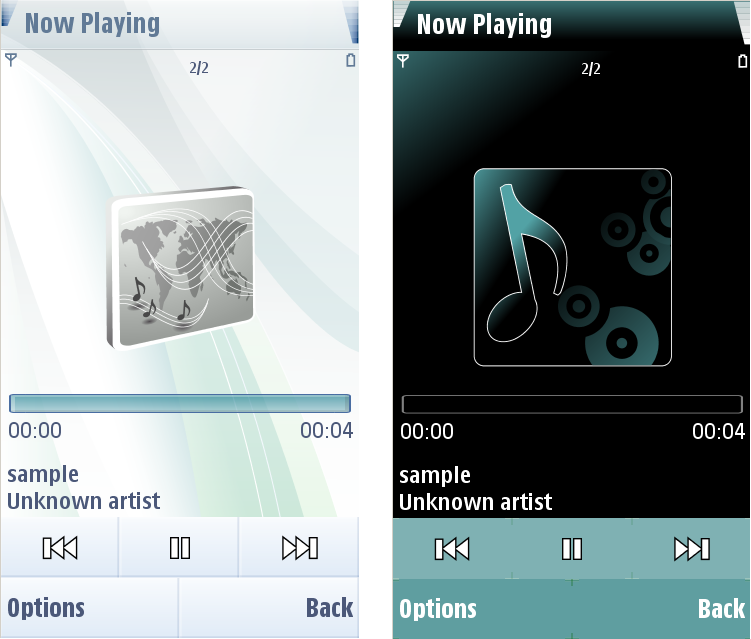

Music player
The Music player application has several customizable components:
Background
The Music player supports full screen background graphics. If you do
not create a background, the default Music player background is
used.
Buttons
There are several customizable buttons that have four different states:
- Available
- Unavailable
- Focused
- Selected
Volume
bar
This is fully customizable.
Progress
bar
This is fully customizable.
Equalizer
The Equalizer has a bar and a handle that can be customized.
Some of the components are customizable in the Colors section
- Line in oscilloscope
- Gradient in spectrum
- Functionality indicators
(random, playlist etc.)
The figure below illustrates a default Music Player and a
customized Music Player.

Figure:
Default and customized
Music Player